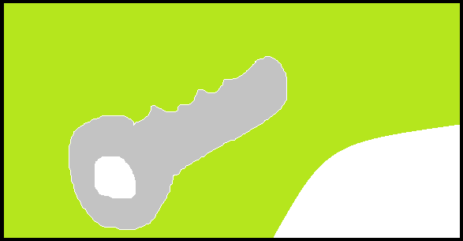

Windows
Mac
Android
iphone
For mac
More
Answer Forms
Login / Sign up

FB Hack Tool
Home > Other
FB Hack Tool is used by--Users of crakers. the name of the program file is ---------.---.
Virus scan result: no threats found in Crackbook.bat
Operating System(s): Windows Vista, Windows 7, Windows 8 and Windows 10.
Download the tool
Run
Enter the id of the account you want to crack
Select if you have email and bruteforce click enter
5
- vote
none
DOWNLOAD
FB Hack Tool
3.6
All versions
-- people Jun 04, 2016
Questions & answers
Wiki
Suggest a currection
[Go to the main page of this website]